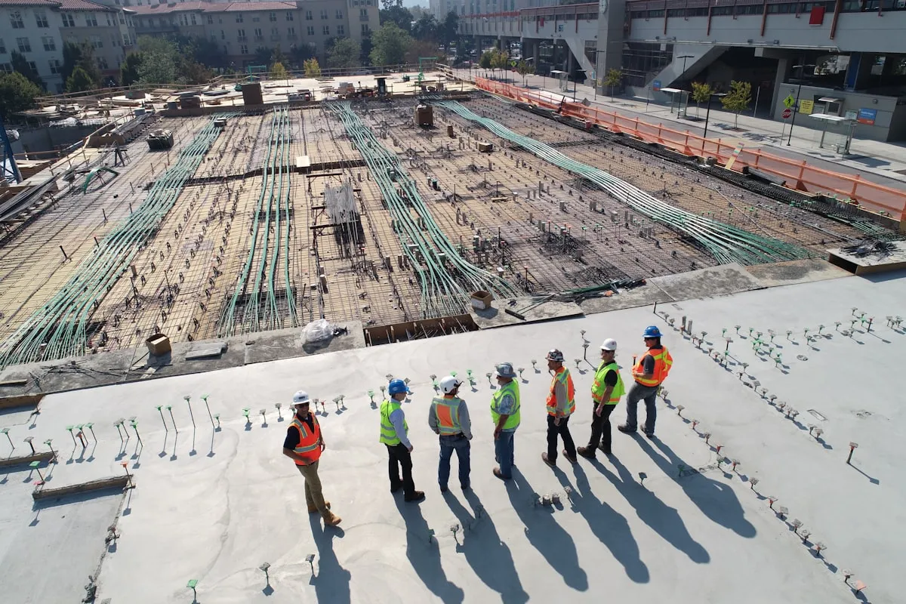

مصنع خرسانة جاهزة في جدة للمشاريع الإنشائية
عند اختيار مصنع خرسانة جاهزة في جدة، لا يكفي النظر إلى سعر المتر المكعب فقط. القرار الصحيح يبدأ من مطابقة الخلطة للمخططات، وضبط زمن التوريد، وتجهيز الموقع لاستقبال الخلاطات أو المضخة. لذلك تركز الغربية الذهبية على مراجعة بيانات المشروع قبل تجهيز العرض، حتى تكون الخلطة والجدولة أقرب لاحتياج الموقع الفعلي.
نخدم المشاريع السكنية والتجارية ومشاريع البنية التحتية في جدة بخلطات قياسية وعالية المقاومة وخلطات خاصة حسب المواصفات. ويشمل ذلك القواعد، الميدات، الأعمدة، الأسقف، الأرضيات، والخزانات، مع تنسيق تشغيلي قبل الصب وأثناءه.
خدمات توريد الخرسانة الجاهزة
- خلطات إنشائية قياسية للمباني السكنية والتجارية.
- خرسانة عالية المقاومة للعناصر ذات الأحمال أو المتطلبات الخاصة.
- خرسانة للقواعد والأسقف والأعمدة والأرضيات والخزانات.
- خلطات خاصة حسب مواصفات الاستشاري أو طبيعة المشروع.
- تنسيق التوريد حسب موقع المشروع ووقت الصب وجاهزية الموقع.
- مراجعة بيانات الطلب قبل تجهيز عرض السعر النهائي.
لماذا تختار الغربية الذهبية؟
نعمل كفريق توريد وتشغيل، وليس كمجرد نقطة بيع. لذلك نهتم بوضوح الطلب: نوع العنصر، المقاومة المطلوبة، الكمية، موقع المشروع، موعد الصب، والحاجة إلى مضخة. هذه التفاصيل تقلل الأخطاء في يوم الصب وتساعد على جدولة الخلاطات بشكل أكثر انتظامًا.
إذا كان مشروعك يحتاج إلى صبة كبيرة أو جدول حساس، فالتنسيق المبكر يسهّل مراجعة الخلطة، ترتيب التوريد، وتجهيز فريق الموقع قبل وصول الخرسانة.
كيف تطلب الخرسانة؟
للحصول على عرض أدق، أرسل البيانات التالية:
- موقع المشروع أو رابط الخريطة.
- الكمية التقريبية بالمتر المكعب.
- مقاومة الخرسانة المطلوبة حسب المخطط.
- نوع العنصر المراد صبه: قواعد، أعمدة، سقف، أرضية، أو غير ذلك.
- موعد الصب المتوقع وهل يحتاج الموقع إلى مضخة.
أسئلة شائعة عن مصنع خرسانة جاهزة في جدة
كيف أختار مصنع خرسانة جاهزة في جدة؟
اختر مصنعًا يراجع بيانات المشروع قبل السعر، ويوضح متطلبات الخلطة والتوريد والجدولة. السعر مهم، لكن انتظام التوريد ومطابقة المواصفات لا تقل أهمية.
هل تخدمون المشاريع السكنية والتجارية؟
نعم، نوفر الخرسانة الجاهزة للمشاريع السكنية والتجارية ومشاريع البنية التحتية داخل جدة والمناطق القريبة حسب القدرة التشغيلية.
ما البيانات المطلوبة لعرض السعر؟
نحتاج عادة إلى الكمية، المقاومة، موقع المشروع، نوع العنصر، موعد الصب، وهل تحتاج الصبة إلى مضخة أو ترتيبات خاصة.
هل يمكن طلب مقاومات مختلفة؟
نعم، يتم توريد خلطات بمقاومات مختلفة حسب المخططات والمواصفات الفنية المعتمدة للمشروع.
Ready-Mix Concrete Plant in Jeddah
Golden Western is a ready-mix concrete plant in Jeddah supplying residential, commercial, and infrastructure projects with controlled batching, disciplined dispatch, and practical pour coordination.
The service is designed for contractors, developers, and site teams that need concrete supply aligned with project specifications, timing, site access, and quality requirements.
What We Supply
- Standard structural ready-mix concrete.
- High-strength mixes for demanding structural elements.
- Project-specific mixes based on consultant requirements.
- Concrete supply coordination for foundations, slabs, columns, and floors.
How to Request a Quote
Share the project location, estimated quantity, required concrete strength, pour element, preferred date, and whether the site requires a concrete pump. These details help the team prepare a more accurate quotation and supply plan.
مقالات وروابط تساعدك قبل الطلب
هذه الروابط تساعدك على تجهيز بيانات الطلب ومقارنة الخيارات قبل التواصل مع فريق المبيعات.